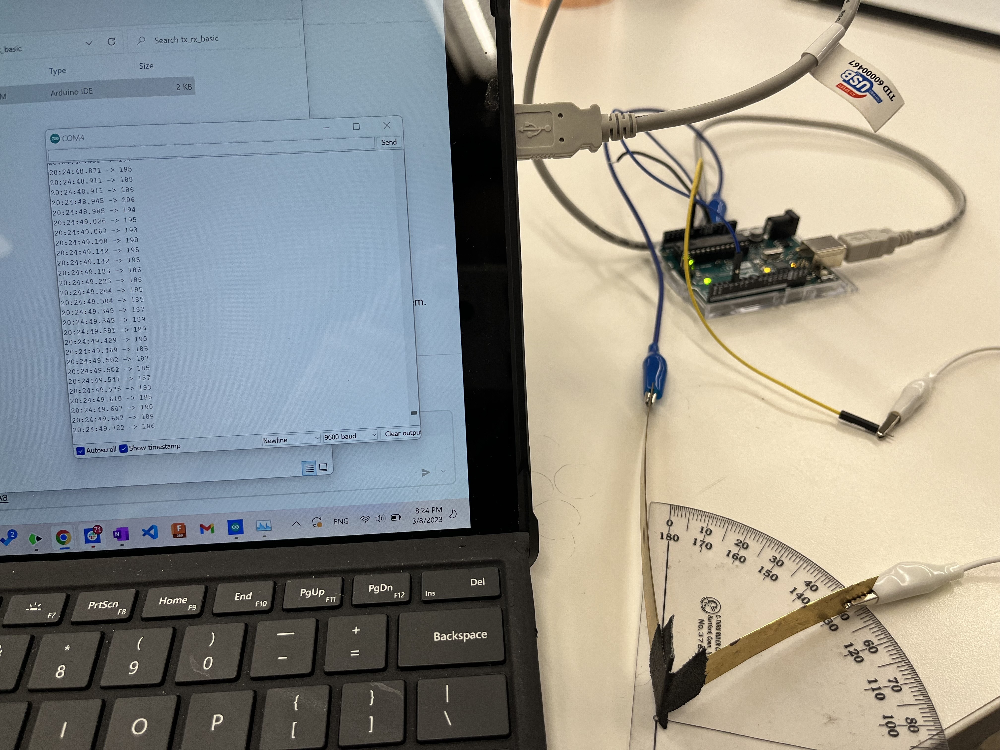

Week 6
I Have the Capacity to Sense Your Pain: Input Devices
Topics Covered:
- How To
- Capacitative Sensing
- Explorations
- Make my own Capacitative Sensor: Angle Sensor
- Mic: Audio Sensor
- Future: BPM
The assignment:
- Make a capacitive sensor to measure a physical quantity with your microcontroller. Avoid the delay() function; use timers instead.
- Select another sensor (temperature, microphone, etc.).
- Include schematics of each sensor.
- Calibrate each sensor by plotting points on a graph. Discuss the relationship between the signals recorded by your microcontroller and the physical quantities that you're measuring.
1. Make Your Own Capacitive Sensor: Angles
I wanted to do something a bit different/not precisely one of the examples for the capacitative sensor I made (haha not better though, just different).
Using the Tx-Rx capacitative sensing tutorial from Nathan, I made a pretty crude angle sensor, made up of two (copper?) metal strips taped loosely together by insulating tape, such that the strips can still bend. Using alligator clips and a protractor, I can measure the actual angle without touching the strips and the quantity produced by the Arduino program on Serial Monitor.
Example: (not the actual measurements I used! I was a bit more precise about where I was holding the strips. This is just to show how it works and that the serial monitor's values change with the angle.)

Chart:

Tada! It gets much more accurate and sensitive at the close range of 0-20 degrees. I would need less bendy strips to ensure better angle accuracy at the single degree-level.
2. Make Another Sensor: Mems Mic
For the other sensor, I used the Mems Mic, which I also explored in Week 4.
Below, you can see my method of measurement: taking the top value recorded by the Serial Monitor when playing the same loud buzzer sound from YouTube at each of 17 volume levels on my iPhone, including zero volume.
I found a relatively smooth curve, which made me pretty happy! I'm sure taking the average of many serial monitor values would yield even better results (compared to my taking the highest value I saw).
Future Hope: BPM Sensor, RFID Sensor
In the future, I'd like to make a BPM Sensor as well as a RFID sensor!